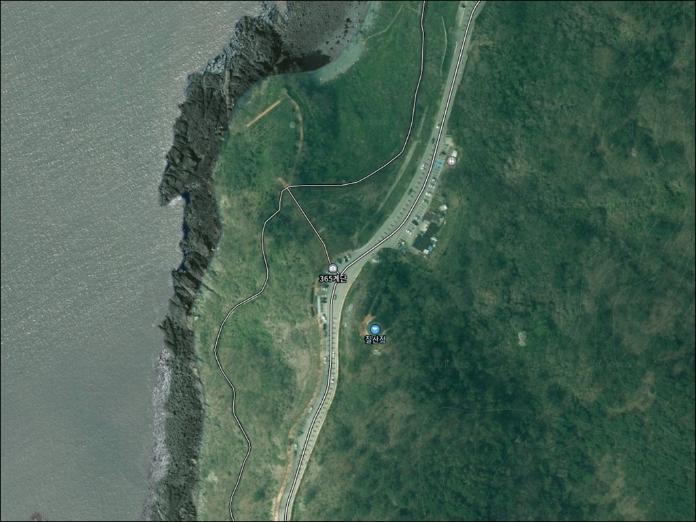
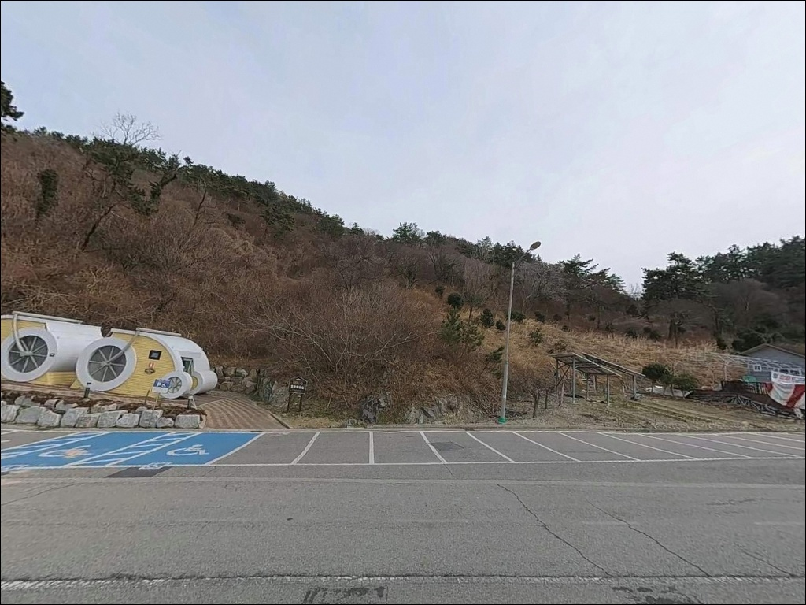
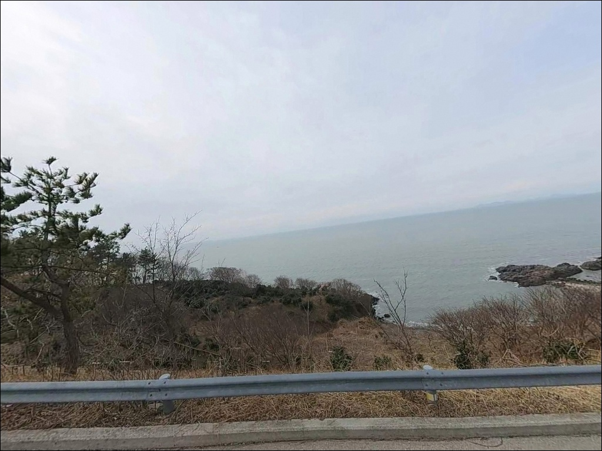
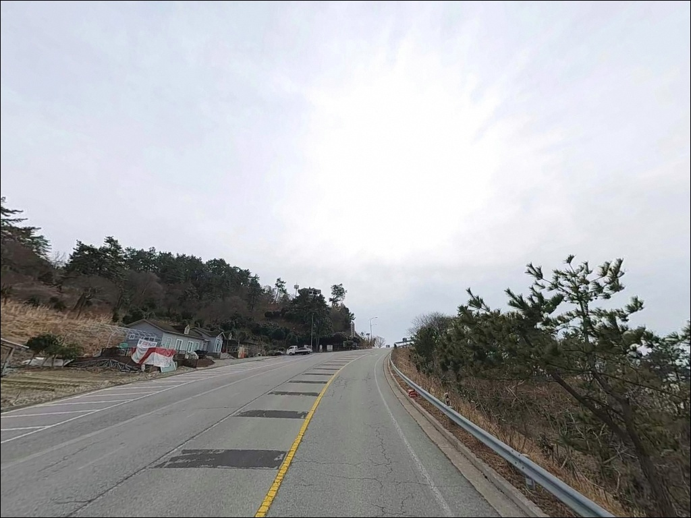
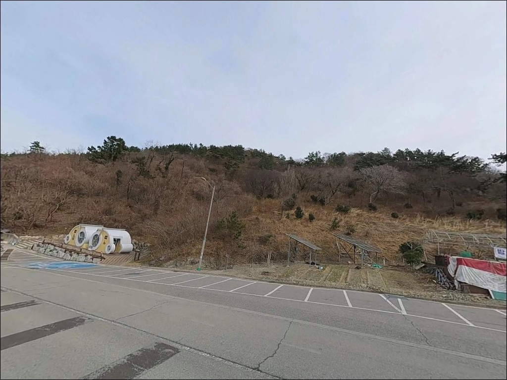
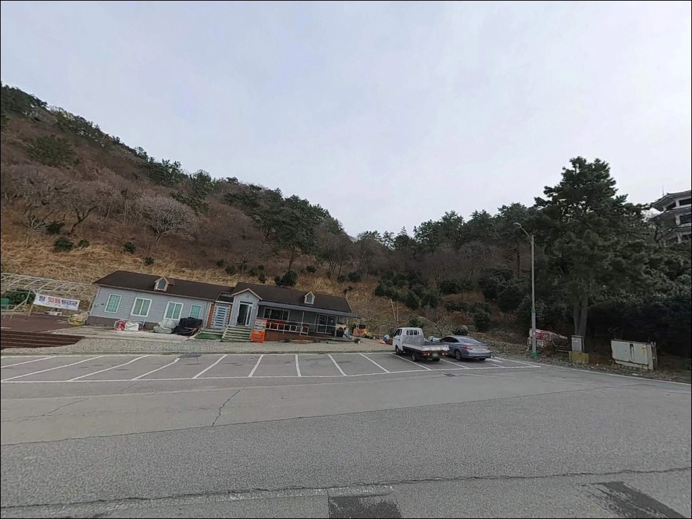
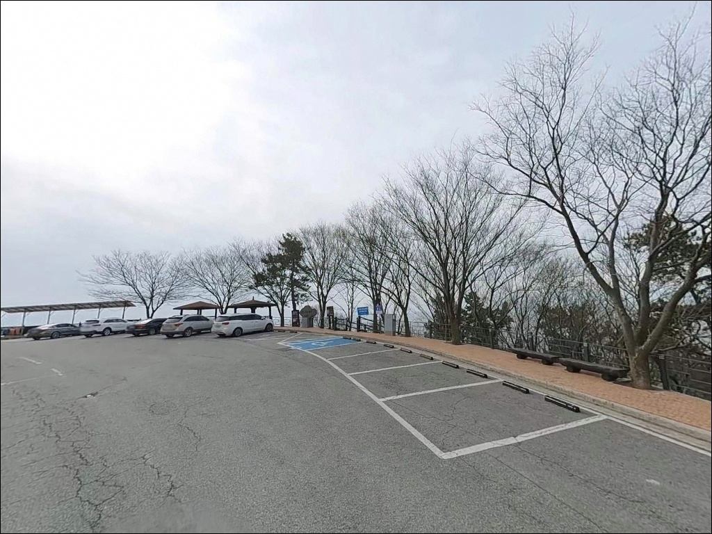
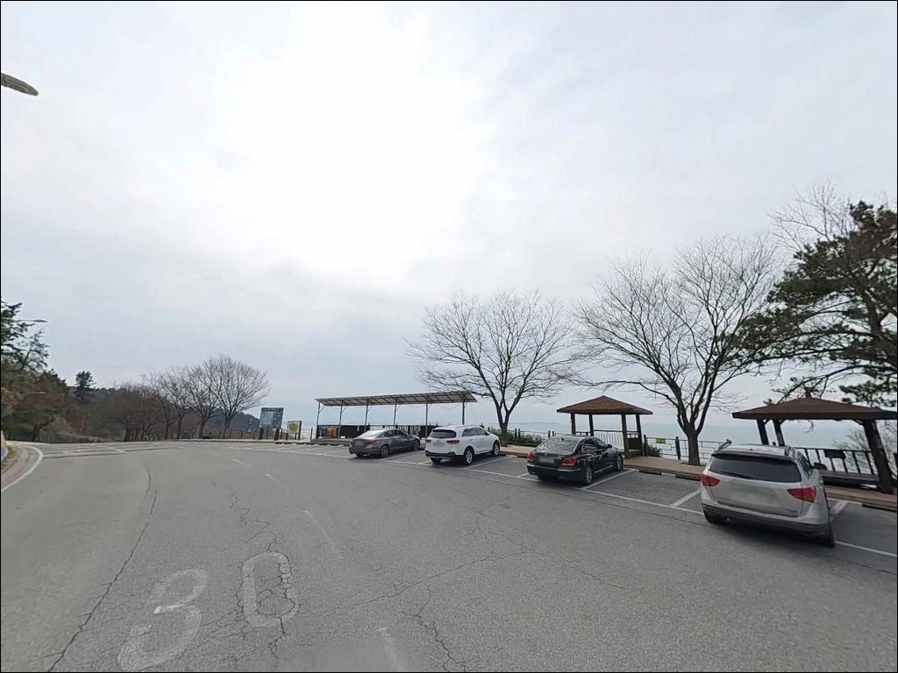
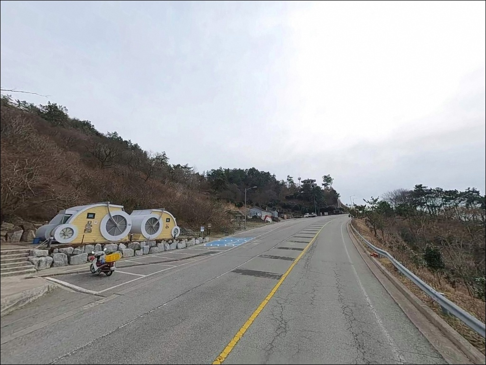

365계단, 전남 영광군 한적한 분위기 속 차박, 낚시를 함께 하기 좋은 곳
이 페이지에는 광고(제휴 링크 포함)가 있으며, 광고 링크를 통해 구매하면 운영자가 판매 수익 또는 수수료를 받을 수 있습니다. 포인트 사진: 카카오맵 스카이뷰·로드뷰. 이 페이지의 지도·사진 이미지는 카카오맵의 실제 서비스 이미지와 다를 수 있습니다.


포인트 안내
365계단
전남 영광군 백수읍 대신리 산 234-11
서해 조수간만 차를 확인하지 않고
365계단 아래 갯바위에 들어서면,
만조 전후로 수위가 빠르게 올라
철수 타이밍을 놓치는 상황이 생깁니다.
칠산 앞바다는 조석 영향이 강한 해역이고,
계단 아래 자연 갯바위는
수몰 속도가 빠른 지형 구조입니다.
이 글은
영광 백수해안도로 365계단의
갯바위 접근 구조, 낚시 지형 여건,
차박 체류 조건을 중심으로 정리합니다.
조황 단정이나 낚시 가능 여부 보장은
이 글의 범위에 포함되지 않습니다.

1. 진입 동선과 계단 접근 구조
백수해안도로는 포장 상태가 양호한
해안 관광도로입니다.
왕복 2차선이지만 커브 구간이 많아
속도를 내기 어려운 도로 구조이며,
365계단 입구까지의 접근 자체에
큰 어려움은 없습니다.
365계단 입구 인근에는
소수 차량이 이용 가능한
도로변 주차 공간이 있습니다.
더 안정적인 주차를 원한다면
약 1km 거리의 노을전시관 무료 주차장이
가장 현실적인 기점입니다.
백수해안도로 전 구간에는
번호가 지정된 공용 주차장이 8개소 이상 있어,
현장 상황에 따라 이동해 활용할 수 있습니다.
갯바위까지는 계단 도보 동선만 가능하며,
차량 진입은 불가합니다.
계단 수가 상당하고 경사가 있어
낚시 장비를 들고 오르내릴 때
체력 소모가 큰 편입니다.
장비는 최소한으로 줄이는 것이
이 포인트를 제대로 쓰는 방식입니다.

2. 차박 환경과 야간 체류 여건
365계단 일대는 백수해안도로 관광 구간으로,
낮 시간에는 드라이브·산책 방문객이
꾸준히 오가는 편입니다.
밤늦은 시간대에는 차량 통행이 줄고
조용해지는 경향이 있지만,
관광지 특성상 완전한 고립형 차박 분위기는 아닙니다.
야간 경관 조명은 노을전망대 조형물 주변에
설치된 것이 확인되며,
계단 하단 갯바위 쪽은
조명이 거의 없는 암흑 구간이 많습니다.
야간에 갯바위를 하강하면
미끄럼과 추락 위험이 크기 때문에,
야간 낚시는 계단 아래보다
도로변 상부 구간에 한정하는 것이 안전합니다.
차박 체류 기점으로는
노을전시관 주차장이 가장 안정적입니다.
평탄한 주차 공간과 화장실이 갖춰져 있으며,
전시관 건물 밖은 연중 개방 상태입니다.
도로변 갓길 주차는
차량 통행 여건을 현장에서
먼저 확인한 뒤 결정하는 것이 기본입니다.


3. 주변 편의시설 및 인프라 현황
확인된 공식 시설은
노을전시관 내 공중화장실과 무료 주차장입니다.
전시관 주소는 전남 영광군 백수읍 해안로 957이며,
하절기(3~10월) 10시~18시,
동절기(11~2월) 10시~17시 운영합니다.
전시관 건물 밖 공간은 연중 이용 가능합니다.
365계단 입구 인근에는
별도의 화장실이 확인되지 않습니다.
반경 3km 이내 편의점·마트의
확정 운영 정보가 없으므로,
식수, 간식, 낚시 소품, 의약품은
출발 전 완비하고 진입하는 것이 기본입니다.
해안도로를 따라 식당·카페가 산재해 있지만
운영 시간은 현장에서 확인해야 합니다.

4. 방문 전 반드시 챙겨야 할 준비사항
이 포인트 방문 전 가장 먼저 할 것은
물때 확인입니다.
칠산 앞바다는 서해 조석 영향이 강한 해역으로,
바다타임에서 영광 백수 기준 물때를 확인하고
간조 전후를 기준으로 진입 타이밍을
잡아야 합니다.
만조가 오기 전에 반드시 여유를 두고
계단 위로 철수하는 것이 기본 안전 수칙입니다.
기상 예보도 빠짐없이 확인해야 합니다.
외해에 직접 노출된 구조라
파고와 풍속 예보가 기준치를 넘으면
갯바위 접근 자체를 재고해야 합니다.
너울이 예보된 날의 갯바위 진입은
물때와 무관하게 위험 판단 대상입니다.
갯바위 신발(미끄럼 방지 창)은 선택이 아닙니다.
계단 경사와 갯바위 표면을 일반 운동화로
낚시 장비를 들고 오르내리는 것은
위험 부담이 큽니다.
구명조끼는 해양경찰청 기본 수칙이며,
수중여가 많은 지형 특성상
여분 채비도 넉넉히 챙겨야 합니다.

5. 물때 한 번에 낚시 여건이 바뀌는 지형 구조
백수해안도로 전 구간은
모래 해변 없이 기암괴석과 해안 절벽이
연속되는 구조입니다.
365계단 하단 갯바위는
칠산 앞바다를 정면으로 마주하는
외해 직접 노출형 위치에 있으며,
방파제나 테트라포트 없이
순수 자연 갯바위만으로 구성된 지형입니다.
수심은 계단 하단·갯바위 발판 주변에서
갑자기 깊어지는 구조를 가집니다.
수중여가 여러 곳에 분포해 있어
채비 손실이 잦은 편이며,
바닥 탐색 시 여걸림 대비가
필수 조건입니다.
조류 흐름은 서해 조석의 영향을 직접 받습니다.
물이 서서히 빠지는 간조 전후 구간에
갯바위 면적이 최대로 드러나며,
이 타이밍이 낚시 접근 가능 시간의
실질적 기준이 됩니다.
출조 전 최신 조황은
"영광 백수 갯바위 낚시",
"백수해안도로 갯바위 조황" 키워드로
검색해 보시기 바랍니다.
365계단 갯바위는 물때를 계산하지 않은 진입이
안전 위험으로 직결되는
서해 외해 노출형 지형입니다.
칠산 앞바다 갯바위 구간은 수중여가 많아
루어 탐색에 유리하지만,
채비 손실이 잦은 지형이라
여분 채비 준비가 출조 성패를 가릅니다.


6. 갯바위에서 꺼낼 수 있는 낚시 스타일
이 지형에서 가장 기본이 되는 낚시는
소프트베이트 기반 갯바위 루어입니다.
수중여가 많고 발판 아래부터 수심이 형성되는 구조는
우럭·노래미가 서식하기 좋은 조건이며,
소형 지그헤드에 소프트베이트를 달아
갯바위 경계선 주변을 느리게 탐색하는 방식이
이 지형에 잘 맞습니다.
원투낚시도 시도해볼 만한 선택입니다.
수심이 나오는 구간에서 장타를 치면
바닥 어종을 노릴 수 있는 구조이지만,
수중여 분포가 많아 채비 손실이 잦습니다.
봉돌과 바늘을 넉넉하게 준비하고,
여걸림이 잦은 지형에 맞는 채비 구성을
미리 갖춰두는 것이 기본입니다.
가을 시즌에는 에깅을 더해볼 수 있습니다.
서해 칠산 권역은 가을에
갑오징어·주꾸미 활성도가 올라오는 시기가 있습니다.
갯바위 외해 방향으로 에기를 캐스팅하고
조류 흐름을 활용해 천천히 끌어오는 방식이
이 지형에서 어울리는 스타일입니다.

7. 대안 포인트와 플랜 B 동선
365계단 갯바위 여건이 맞지 않거나
파도·물때 조건이 진입을 막을 때,
가장 먼저 이동할 수 있는 곳은
대신항입니다.
365계단 인근에 위치한 소형 어항으로,
방파제·선착장 구조를 갖추고 있어
차량 접근과 갯바위 없이도
낚시가 가능한 구조입니다.
백수해안도로를 따라 이어지는
다른 갯바위 구간도 대안이 됩니다.
같은 해안선의 기암 절벽 구조가
연속되므로,
주차 여건이 더 나은 구간을
위성지도로 미리 확인해두면
현장 이동이 수월합니다.
파도·혼잡도를 보고
즉시 이동할 수 있는 플랜 B 구간을
출발 전에 1~2곳 정해두는 것이 좋습니다.
법성포 방파제는 약 8~10km 거리에 있는
영광의 대표 항구 방면입니다.
방파제 낚시 여건을 갖춘 지역으로,
365계단과 이 권역 출조 동선으로
묶어두면 하루 일정을 효율적으로
운영할 수 있습니다.

준비가 맞으면 백수해안도로 노을과
갯바위 손맛을 함께 챙길 수 있습니다
갯바위 루어나 원투낚시를 즐기는 낚시인이라면
365계단 하단 갯바위 지형 구조는
잘 맞는 편입니다.
수중여가 많은 자연 갯바위와
외해 방향의 수심 구조는
우럭·노래미 계열 어종을 기대해볼 수 있는
조건을 갖추고 있습니다.
가을 시즌에는 에깅을 더해
복수 방식 공략도 가능합니다.
반면 장비를 많이 가져가는 출조나
야간 갯바위 낚시를 메인으로 삼는다면
계단 이동 부담과 조명 없는 하강 위험을
먼저 고려해야 합니다.
물때 확인, 기상 점검, 여분 채비 준비,
이 세 가지를 갖추고 간다면
백수해안도로 일몰과 갯바위 낚시를
함께 즐길 수 있는 포인트입니다.
365계단은 관광지 내 갯바위 접근 구간이라는 점에서
방문객이 많은 낮 시간대에는
주변 통행 동선에 신경 써야 하고,
쓰레기는 반드시 들고 나와야 합니다.
간조 타이밍에 맞춰 갯바위 낚시를 마치고,
차박은 노을전시관 주차장을 기점으로 삼아
서해 노을까지 더하면
낚시와 차박이 자연스럽게 이어지는 출조가 됩니다.